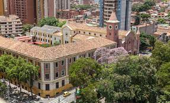
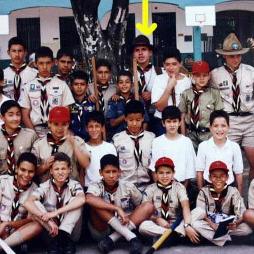
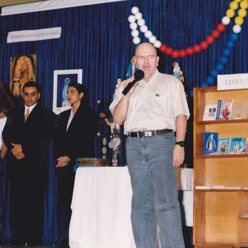

Reseña Historica

Fue un 7 de febrero de 1938
Nuestro colegio abrió sus puertas con cerca de 113 estudiantes por lo pronto y para ese año los tres primeros grupos de instrucción primaria…todo faltaba y lo había todo: el espíritu de Don Bosco, poderoso, lleno de optimismo y alegría.
En el proceso ascendente que ha tenido el colegio, en su proceso educativo y pastoral, en la dirección y responsabilidad de esta obra y comunidad, han pasado muchos rectores que han dejado huellas y muchos coordinadores de la pastoral entregados a dar a conocer la vida y testimonio del santo de los jóvenes
A seguir cada día con su loable empeño de revivir, de transformar y llevar adelante ese gran labor con dinamismo, acompañados por un grupo de docentes que al estilo de Don Bosco le han imprimido alegría y exigencia a su labor hasta ubicarlo a la altura de los mejores establecimientos educativos de la ciudad, con su proyección de ser una comunidad signo y portadora del amor de Dios y en su proceso de esfuerzos continuados, lo convierte en una entidad responsable como bastión de la educación cristiana, estructurada y apta para cumplir con la misión y políticas trazadas .
El colegio El Sufragio, tiene el insigne honor de haber desarrollado su actividad ceñidos a las normas de amar a los jóvenes, legado que trazó su fundador y que sólo exigió como única retribución la práctica de una conducta personal que dignifique la propia existencia, por eso la enseñanza de este colegio se convierte en un auténtico apostolado de servicio con calidad educativa, pastoral, social y cultural. Así hemos palpado la historia de nuestro colegio.

Historia Colegio
1908
Algunas familias de Boston solicitan a Monseñor Manuel José Caicedo, el permiso para construir una capilla a San Cayetano, que posteriormente se consolidó con el nombre de Nuestra Señora del Sufragio. Historia Colegio Salesiano El Sufragio Medellín
1920
Cedida a la comunidad salesiana la Iglesia del Sufragio. Historia Colegio Salesiano El Sufragio Medellín
1938 - 1940
En el año 1938 el Colegio El Sufragio fue fundado por el Padre Roberto Pardo Murcia, quien fue su rector hasta el año 1940. Historia Colegio Salesiano El Sufragio Medellín
1938
Se abrió el colegio El Sufragio con el fin de conseguir vocaciones para el seminario de Mosquera (Cundinamarca) con los 3 primeros grados de primaria. (113 estudiantes). Historia Colegio Salesiano El Sufragio Medellín
1948
Se demolió el teatro y la casa cural, para construir el patio de descanso y recreación. Historia Colegio Salesiano El Sufragio Medellín
Segunda mitad del siglo XX
1952
Con el padre Andrés María Ferro se culmina la construcción de la fachada y se inaugura el primer grado de bachillerato. Historia Colegio Salesiano El Sufragio Medellín
1957
Se contaba con todos los grados de primaria y bachillerato completo. El colegio entrega su primera promoción de bachilleres. Historia Colegio Salesiano El Sufragio Medellín
1960
Las actividades de la parroquia y el colegio se separan en dos comunidades. Historia Colegio Salesiano El Sufragio Medellín
1963
Con el Padre Bernardo Vélez como director, se celebra un cuarto de siglo de la fundación del colegio. Historia Colegio Salesiano El Sufragio Medellín
1960
En la década de los 60 el padre Bernardo Vélez como director, adelantó la construcción de la segunda parte del edificio. Historia Colegio Salesiano El Sufragio Medellín
1970
Comienza el bachillerato nocturno mixto. Historia Colegio Salesiano El Sufragio Medellín
1977
El oratorio renace y se conserva hasta la fecha. Historia Colegio Salesiano El Sufragio Medellín
Décadas de los 80´s - 90´s
1985
Se inaugura el preescolar con 69 niños. Historia Colegio Salesiano El Sufragio Medellín
1986
Se transforma la capilla en coliseo con graderías e iluminación, se dota y decora el salón de dibujo técnico, se amplía y adecúa la biblioteca, se crean nuevos grupos de primaria, se aumentan en 25 las nuevas plazas de profesores y empleados, se construye la cafetería, se da vía libre a las actividades extracurriculares. Historia Colegio Salesiano El Sufragio Medellín
1987
Se crean los laboratorios de biología, física y química y se adquieren los equipos e instrumentos para el conjunto musical. Historia Colegio Salesiano El Sufragio Medellín
1988
Celebración de los 50 años con el padre Luis Fernando Betancur. Historia Colegio Salesiano El Sufragio Medellín
1999
Con el Padre Jairo Gallo como director, se inaugura la planta física del preescolar. Historia Colegio Salesiano El Sufragio Medellín
Nuevo Milenio (Siglo XXI)
2000
Se crea el circuito cerrado de televisión, el laboratorio de inglés, la tercera sala de sistemas, el parque infantil del preescolar, se reforma el laboratorio de química. Historia Colegio Salesiano El Sufragio Medellín
2006
A partir de este año el colegio recibe por parte del ICFES la categoría Muy Superior en las pruebas del estado. Historia Colegio Salesiano El Sufragio Medellín
2008
Con el Padre Francisco Ríos como director, el colegio celebra los 70 años de existencia. Historia Colegio Salesiano El Sufragio Medellín
2011
Se inaugura el salón de Memoria Histórica, se recibe el certificado de solidaridad social por parte de FENALCO, el certificado ISO 9001 por parte del ICONTEC y una mención de honor en la categoría Experiencia Muy Significativa con el proyecto: “Calculistas”, por parte de la Alcaldía de Medellín en la ceremonia Premios Ciudad de Medellín a la Calidad de la Educación. Historia Colegio Salesiano El Sufragio Medellín
2012
Premio al mejoramiento educativo: Medellín la más educada y premio “Mejor Experiencia Significativa” con el proyecto: “Filosofía con sentido”. Historia Colegio Salesiano El Sufragio Medellín
2013
Inicia el proceso de la coeducación. Celebración de los 75 años Colegio Salesiano El Sufragio.
